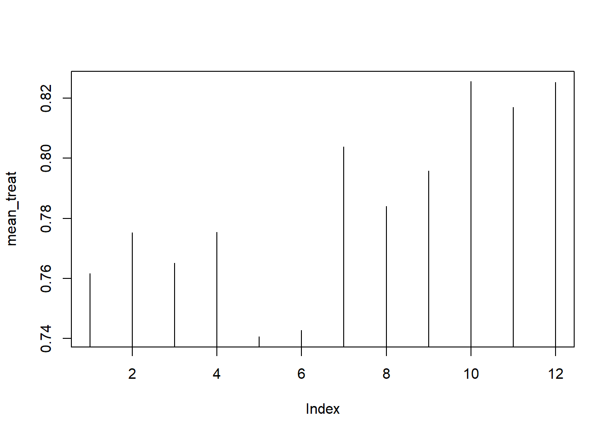
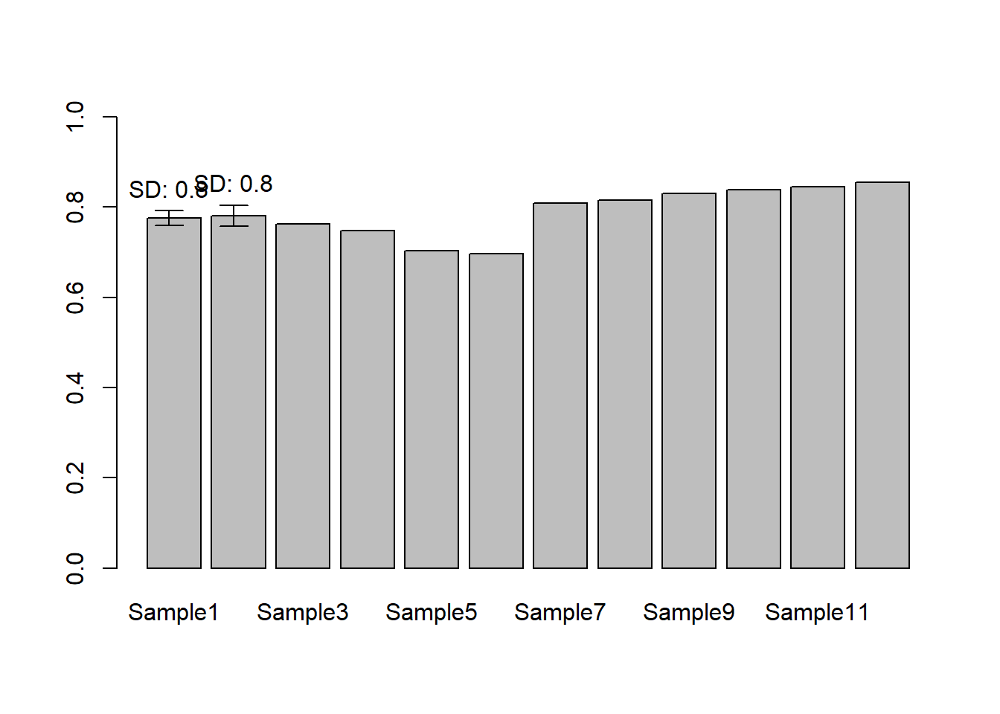
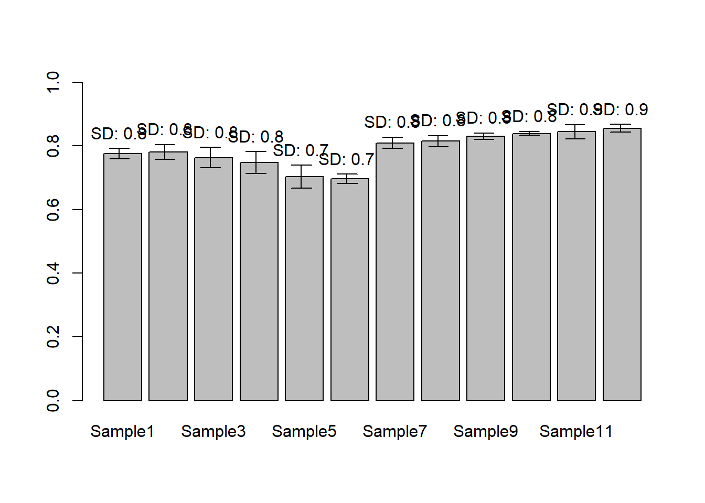

Chapter 4 R programming basics II
4.1 matrix (행렬)
매트릭스는 2차원 행렬로 같은 형식의 데이터 값 (numberic, character, logical) 으로만 채워진 행렬을 말합니다. 메트릭스를 만드는 방법은 아래와 같으며 nrow와 ncol 파라메터에 행과 열의 수를 넣고 각 셀에 들어갈 값은 가장 앞에 위치한 data 파라메터에 넣어 줍니다 (?matrix로 파라메터 이름 확인). 메트릭스 인덱싱은 메트릭스 안의 값을 저장하거나 참조할때 (빼올때) 사용하는 방법입니다. 메트릭스 변수이름 바로 뒤에 대괄호를 이용해서 제어를 하며 대괄호 안에 콤마로 구분된 앞쪽은 row, 뒷쪽은 column 인덱스를 나타냅니다. row 또는 column에 해당하는 어느쪽에도 값을 넣지 않을 경우 그 row 또는 column 전체를 참조하게 됩니다.
mymat <- matrix(0, nrow=100, ncol=3) # 1
mymat[,1] <- 1:100 # 2
mymat[,2] <- seq(1,200,2) # 3
mymat[,3] <- seq(2,200,2) # 4여러 row나 column을 참조할 경우 아래와 같이 combine 함수를 사용하여 묶어줘야 하며 스칼라값을 더하거나 뺄 경우 vector / matrix 연산을 기본으로 수행합니다.
4.2 data.frame
데이터프레임은 변수의 모임으로 형태는 매트릭스와 같으나 $ 기호를 이용하여 각 구성 변수를 참조할 수 있다는 점이 다릅니다. 또한 데이터프레임 또는 매트릭스의 row나 column에 이름이 주어져 있을 경우 이름을 따옴표(")로 묶은 후 참조가 가능합니다.
## data.frame
ids <- 1:10
ids
idnames <- paste("Name", ids, sep="")
idnames
students <- data.frame(ids, idnames)
students
class(students$ids)
class(students$idnames)
students$idnames
students <- data.frame(ids, idnames, stringsAsFactors = F)
class(students$idnames)
students$idnames
students[1,]
## data frame indexing
students$ids
students[,1]
students[,"ids"]4.3 list
리스트는 변수들의 모임이라는 점에서 데이터프레임과 같으나 구성 변수들의 길이가 모두 같아야 하는 데이터프레임과는 달리 다른 길이의 변수를 모아둘 수 있는 점이 다릅니다. 리스트는 아래와 같이 대괄호 두 겹을 이용해 인덱싱을 합니다.
4.4 File 읽기/쓰기
텍스트 파일의 경우 아래와 같이 csv 또는 txt 파일로 저장하여 메모장으로 열어 확인할 수 있으며 읽어올 경우 구분자 (sep 파라메터) 나 header를 (header 파라메터) 읽을지 읽지 않을지 등을 옵션으로 지정할 수 있습니다.
x <- c(1,2,3,4)
y <- c(5,6,7,8)
xy<-data.frame(x=x, y=y)
write.table(xy, file="table_write.txt")
write.table(xy, file="table_write.txt", quote=F)
write.table(xy, file="table_write.txt", quote=F, row.names=F)
write.table(xy, file="table_write.txt", quote=F, row.names=F, sep=",")
write.table(xy, file="table_write.csv", quote=F, row.names=F, sep=",")
mydata<-read.table(file="table_write.csv")
mydata<-read.table(file="table_write.csv", sep=",")
mydata<-read.table(file="table_write.csv", sep=",", header=T)
plot(mydata$x, mydata$z)4.5 Excel file 읽기/쓰기
엑셀파일은 readxl 이라는 R 패키지를 활용하여 읽거나 쓸 수 있습니다.
실습 파일은 형광 세포를 배양하여 형광리더기를 이용해 얻어진 실제 데이터이며 Rprog04-fl.xls 에서 다운로드 받을 수 있습니다. read_excel 함수를 이용하여 파일의 내용을 읽어오면 기본 자료형이 tibble 입니다. tibble은 최근 많이 쓰이는 R object로 data.frame과 유사하나 입력값의 type, name, rowname을 임으로 바꿀 수 없다는 점이 다릅니다. tibble에 익숙해지는 것이 좋으나 본 강의에서는 직관적인 진행을 위하여 data.frame으로 전환하여 사용하겠습니다.
## Warning: package 'readxl' was built under R version 3.5.3## New names:
## * `` -> ...1
## * `` -> ...2
## * `` -> ...3
## * `` -> ...4
## * `` -> ...5
## * ... and 7 more problems엑셀파일에는 두 종류의 (OD600nm, fluorescence) 데이터가 저장되어 있으며 각각을 위에서 1~8 row 그리고 12~21 row 값들을 모두 myod와 mygfp로 저장했습니다. 그러나 엑셀파일을 보면 첫번째 컬럼에 관측값 외에 다른 정보들에 대한 텍스트가 적혀 있으며 이로 인해 행렬의 가장 첫 컬럼의 데이터 타입이 character가 되고 나머지 컬럼은 numeric으로 자동 전환 되어 data.frame 오브젝트인 mydata에 저장되게 됩니다. 따라서 아래와 같이 문자형을 숫자형으로 전환하여 추후 연산을 진행하게 됩니다.
수행한 실험의 디자인에 따라서 두 그룹으로 나누고 적절한 이름을 저장합니다.
myod_treat <- myod[2:4,]
myod_control <- myod[5:7,]
sample_names <- paste("Sample", c(1:12), sep="")
replicate_labels <- paste("Rep", c(1:3), sep="")
rownames(myod_treat) <- replicate_labels
colnames(myod_treat) <- sample_names
rownames(myod_control) <- replicate_labels
colnames(myod_control) <- sample_names
mean_treat <- colMeans(myod_treat)
mean_control <- colMeans(myod_control)위 예제의 colMean 과 같은 함수는 column 또는 row 단위로 해당하는 모든 값들에 대해 연산을 수행해주는 함수로 colMean은 평균을 계산하는 함수이고 일반적으로는 다음과 같이 apply 함수와 mean 함수를 이용해서 같은 기능을 수행할 수 있습니다. mean 함수 외 임의의 원하는 함수를 만들어 사용할 수 도 있습니다. 참고로 sd는 표준편차를 구해주는 함수 입니다.
## Rep1 Rep2 Rep3
## 0.8069922 0.7706701 0.7873404## Sample1 Sample2 Sample3 Sample4 Sample5 Sample6 Sample7 Sample8
## 0.7757480 0.7807732 0.7628736 0.7472908 0.7034527 0.6963549 0.8094640 0.8145531
## Sample9 Sample10 Sample11 Sample12
## 0.8301742 0.8390556 0.8447189 0.8555517## Sample1 Sample2 Sample3 Sample4 Sample5 Sample6 Sample7 Sample8
## 0.7757480 0.7807732 0.7628736 0.7472908 0.7034527 0.6963549 0.8094640 0.8145531
## Sample9 Sample10 Sample11 Sample12
## 0.8301742 0.8390556 0.8447189 0.8555517## Sample1 Sample2 Sample3 Sample4 Sample5 Sample6
## 0.015981356 0.023394455 0.032168135 0.034528460 0.035805916 0.014999636
## Sample7 Sample8 Sample9 Sample10 Sample11 Sample12
## 0.017801936 0.017947840 0.010253370 0.006202754 0.022386592 0.012685731본 실습에서는 각 그룹의 평균을 비교하는 막대그래프를 그려보겠습니다.



4.6 Exercise 3-2 standard deviation
앞서 사용한 sd 함수는 표준편차를 구해주는 기본 제공 함수입니다. 아래는 같은 기능을 하는 함수를 만들어 보는 실습 예제 입니다.
## excercise 3-2
mysd <- function(x){
xmean <- sum(x)/length(x)
tmpdif <- x-xmean
xvar <- sum(tmpdif^2)/(length(x)-1)
xsd <- sqrt(xvar)
return(xsd)
}
x <- sample(1:100, 10)
mysd(x)## [1] 26.91468## [1] 26.914684.7 Exercise 3-3 barplot with error bars
앞서 그려본 막대그래프에 에러바를 넣어보는 코드 입니다. 먼저 평균과 표준편차 데이터를 apply 함수를 통해 얻어내고 barplot을 수행합니다. 에러바의 경우 arrows 함수를 사용하는데 사용되는 파라메터의 입력되는 값을 바꿔서 그림을 그려보면 그 의미를 파악하는데 도움이 되겠습니다.
## Exercise 3-3) barplot with sd
control_mean <- apply(myod_control, 2, function(x){mean(x)})
control_sd <- apply(myod_control, 2, mysd)
barplot(control_mean, width=0.83, space=0.2, col="gray", ylim=c(0,1))
arrows(0.5, control_mean[1], 0.5, control_mean[1]+control_sd[1], length=0.1, angle=90)
arrows(0.5, control_mean[1], 0.5, control_mean[1]-control_sd[1], length=0.1, angle=90)
lab <- paste("SD:", round(control_mean[1]+control_sd[1],1))
text(0.5, control_mean[1]+control_sd[1]+0.05, labels = lab)
arrows(1.5, control_mean[2], 1.5, control_mean[2]+control_sd[2], length=0.1, angle=90)
arrows(1.5, control_mean[2], 1.5, control_mean[2]-control_sd[2], length=0.1, angle=90)
lab <- paste("SD:", round(control_mean[2]+control_sd[2],1))
text(1.5, control_mean[2]+control_sd[2]+0.05, labels = lab)
그러나 위 12개의 bar 모두에 대해서 arrows 함수를 그리기 보다는 for 문을 이용한 반복 실행을 수행하는 것이 효율적 입니다. for 문의 사용 형식과 반복 횟수 그리고 반복하며 변화되는 값을 갖는 변수에 대한 의미를 파악하고 사용하는 것이 중요합니다. for문의 사용법은 강의노트 를 참고하세요.
## Exercise 3-4) barplot with sd using for
barplot(control_mean, width=0.83, space=0.2, col="gray", ylim=c(0,1))
for(i in 1:length(control_mean)){
xpos <- 0.5+i-1
arrows(xpos, control_mean[i], xpos, control_mean[i]+control_sd[i], length=0.1, angle=90)
arrows(xpos, control_mean[i], xpos, control_mean[i]-control_sd[i], length=0.1, angle=90)
lab <- paste("SD:", round(control_mean[i]+control_sd[i],1))
text(xpos, control_mean[i]+control_sd[i]+0.05, labels = lab)
}
마지막으로 실습 예제 3-5는 엑셀파일 이름을 argument로 받아서 파일 내용을 읽고 데이터를 두 그룹으로 나누어 평균을 계산한 후 plot까지 그려주는 함수를 만드는 실습 예제 입니다. 다음 시간에 이어서 합니다.

이 저작물은 크리에이티브 커먼즈 저작자표시-비영리-변경금지 4.0 국제 라이선스에 따라 이용할 수 있습니다.